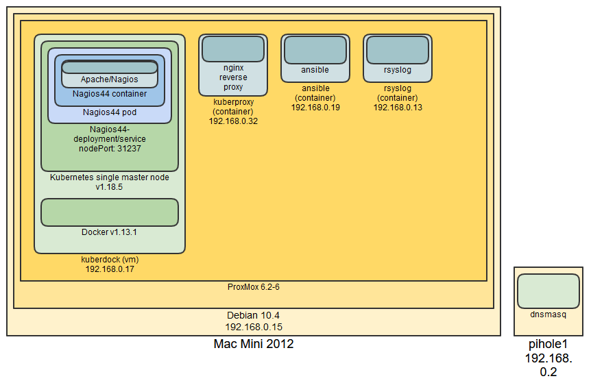

I love small computers, like Raspberry Pi and Intel Nuc. I acquired a 2012 Mac Mini and had to make use of it. This page is to track my recent project developing a virtual environmet to learn some new (to me) tools around container-based virtualization and configuration management.
